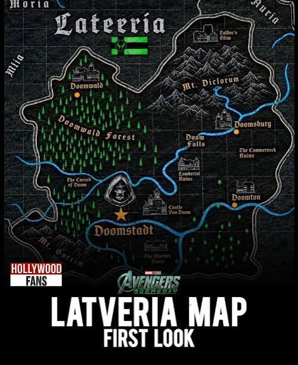

IGNITE 2.0
A student innovation hackathon for building working solutions to real problems under the sovereign reign of Doctor Doom.

The 3 Official Tracks Click Anywhere on a Card to Open Its Page
Three themes. Four rounds of evaluation. One finished prototype. No fixed problem statements are prescribed — teams have total freedom to identify real-world problems and engineer solutions within their chosen theme. Tap any card below to open its dedicated page:
Sustainable Development
Open innovation in climate change adaptation, circular water management, renewable energy, sustainable agriculture, and resilient infrastructure.
Robotics, IoT & Automation
Open innovation in autonomous robots, industrial IoT telemetry, smart sensors, automated actuators, and embedded microcontroller systems.
Agentic AI & Web Development
Open innovation in autonomous multi-agent reasoning, offline-first peer-to-peer web applications, local LLMs, and high-performance web systems.
Hackathon Facilities & Component Guidelines Standard Hackathon Environment
IGNITE 2.0 is a standard technical hackathon conducted at the AICTE IDEA Lab. Please review the equipment policy below before arriving:
Evaluation Format 3 + 1 Progressive Filtering
Ideas are filtered and refined through three online evaluation rounds. The top 30 teams across the three themes advance to the 8-hour offline final at AICTE IDEA Lab, PESCE.
Idea Screening
Teams register and submit a structured PPT on their chosen theme. Every submission is rigorously reviewed by the evaluation board, filtering ideas to standard.
Evaluation & Feedback
Qualifying teams present online before panels, receiving structured suggestions from domain faculty and mentors to strengthen their architecture and approach.
Final Online Evaluation
Refined submissions are evaluated again, and the top 30 teams (10 per theme) are officially announced on 5 December to enter the offline battleground.
AICTE IDEA Lab Final
Finalists assemble at PESCE Mandya with working builds for intensive on-site mentoring, prototyping, judge evaluations, and crowning of the champions.
Theme Ideation Co-Pilot Brainstorming Assistant
Remember: You choose your own problem! If you need architectural brainstorming or tech-stack exploration for your Round 1 PPT submission, query our ideation terminal:
> OPEN INNOVATION MODE: Select a theme to explore sample architecture concepts and MVP scope guidelines:
> Terminal Ready. Select your theme above to brainstorm technical stacks and MVP guidelines.
Offline Final Day Schedule 11 December 2026 · Latveria Deployment Map
An 8-hour live engineering crucible at the AICTE IDEA Lab, PESCE Mandya for the 30 finalist teams. Follow the sovereign timeline mapped across the strategic sectors of Latveria:

🗺️ Sovereign Territory of Victor Von Doom
Official tactical terrain of Latveria. Finalist teams deploy their working prototypes through key geopolitical sectors — from initial border security to apex judgment inside Castle Von Doom.
Infiltration & Citadel Registration
All 30 finalist teams assemble, complete security identity verification, and claim their designated high-power hardware workbenches and Wi-Fi credentials.
The Sovereign Incursion Decree
Ceremonial launch, dignitary address, and briefing on the Doomsday evaluation metrics and rule of engagement.
Forging in the Foundries & Mentoring
The 8-hour sprint begins. Technical mentors and domain faculty circulate across all stations, inspecting circuit boards, reviewing code logic, and refining system architectures.
Latverian Rations & Energy Protocol
Full catered lunch break for all finalist teams, mentors, and organizing staff to recharge cognitive bandwidth before the afternoon development push.
Apex Architecture & Firmware Lock-in
Crucial secondary mentoring round. Teams lock their GitHub repositories, flash final firmware onto microcontrollers, and dry-run live demonstration tests.
Tactical Hydro-Exchange & High Tea
High tea, snacks, and peer exchange. Teams take a brief tactical breather as presentation rosters and judge panels are deployed.
The Sovereign Tribunal (Live Defense)
Strict 5-minute live pitch and working prototype demonstration before industry and academic juries. Zero tolerance for slide-only vaporware; working prototypes only.
The Victor's Decree & Champion Crowning
Official tallying of scores by jury heads and announcement of winners across Track 01, Track 02, and Track 03.
Valedictory & Battleworld Convocation
Distribution of ₹45,000 cash prizes, medals, institutional mementos, and certificate presentation ceremony.
Prizes & Outcomes ₹45,000 Pool · Battleworld Protocol
When the multiverse collapses at sundown on 11 December, only what you build will survive. Total prize outlay of ₹45,000 distributed equally across the three core themes:
Sustainable Development
Green Theme Winner
Winner Award + Certificate of Excellence + PES NEXT Pre-Incubation consideration.
Robotics, IoT and Automation
Purple Theme Winner
Winner Award + Certificate of Excellence + PES NEXT Pre-Incubation consideration.
Software & Agentic AI
Red Theme Winner
Winner Award + Certificate of Excellence + PES NEXT Pre-Incubation consideration.
🚀 Startup Incubation Pipeline
Strong finalist teams will be directly considered for pre-incubation at the PES NEXT Innovation & Incubation Centre, creating a direct feed into regional entrepreneurship programmes and venture cohorts.
Enlist Your Team Round 1 PPT Registration
Team size: 2 to 4 members. Open to students of PESCE and all engineering institutions. Registration is online from 20 to 29 November 2026. Note: The ₹300 fee is payable ONLY by the 30 shortlisted finalists.